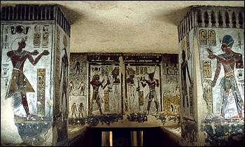

|
In tombs
Writing was a very important part of tomb decoration. The writing on the walls in a pharaoh's tomb helped him get to the afterlife.

Scribes wrote the spells on the walls of tombs before they were carved. Then, the craftsmen decorating the tomb carved the hieroglyphs or painted them. Finally, the head scribe checked over the work that had been done to make sure it was correct.Remember, the craftsmen could not always read what they were carving on the walls, and a missed line or sign could mean that the spells would not work.
back to 'the scribe at work'...
|